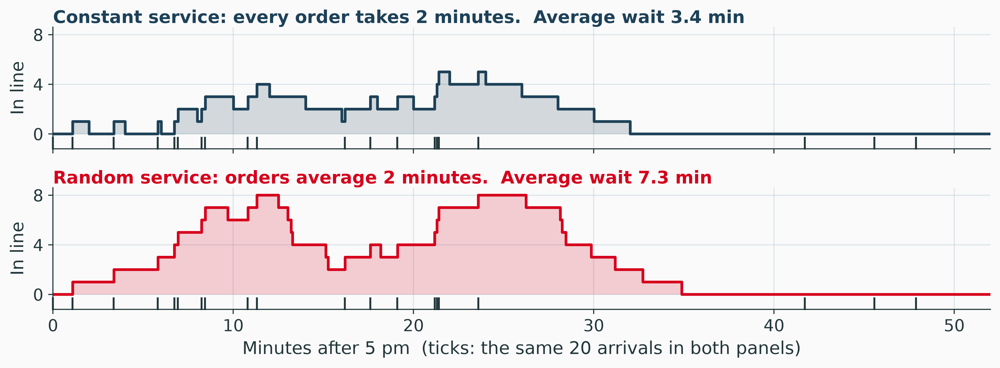
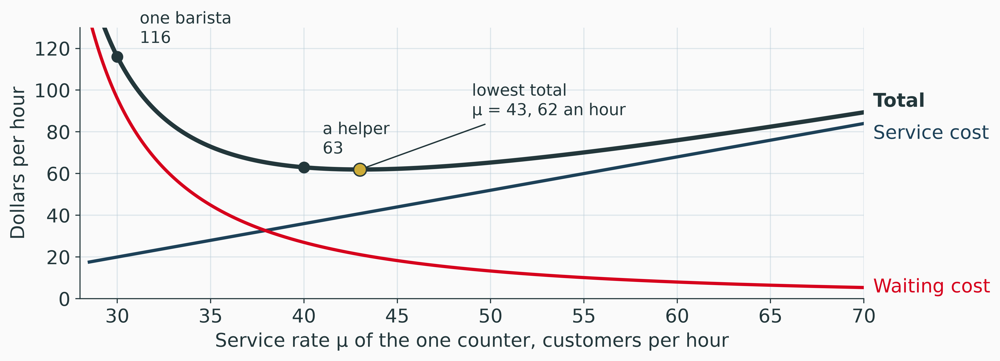
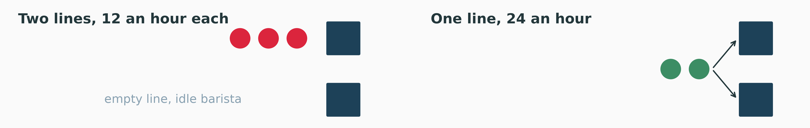

Utilization, Variability and the Cost of Waiting
MGMT 4100 Fall 2026
\[ \newcommand{\argmax}{\operatorname*{argmax}} \newcommand{\argmin}{\operatorname*{argmin}} \newcommand{\E}{\operatorname{\mathbb{E}}} \newcommand{\Var}{\operatorname{Var}} \newcommand{\Cov}{\operatorname{Cov}} \newcommand{\Corr}{\operatorname{Corr}} \newcommand{\plim}{\operatorname{plim}} \newcommand{\tr}{\operatorname{tr}} \newcommand{\rank}{\operatorname{rank}} \newcommand{\N}{\mathcal{N}} \newcommand{\R}{\mathbb{R}} \newcommand{\iid}{\overset{\text{i.i.d.}}{\sim}} \newcommand{\inprob}{\xrightarrow{\;p\;}} \newcommand{\indist}{\xrightarrow{\;d\;}} \newcommand{\eps}{\varepsilon} \newcommand{\bm}[1]{\boldsymbol{#1}} \]
Hudson Service Plaza (fictional, on I-87 north of Albany) installed 6 fast chargers for electric vehicles (EVs) after deck 06. At the 5 pm peak:
| Arrivals an hour | Service time | Servers | Capacity an hour | |
|---|---|---|---|---|
| EV chargers | 10 | 30 minutes | 6 | 12 |
| Coffee counter | 24 | 2 minutes | 1 | 30 |
Both have capacity to spare, and both have a line.
Decision
How long do drivers and customers wait, and what does a 7th charger or a second barista buy?
Waiting lines analysis
Predicts the length of a line and the time spent in it from two averages, the arrival rate and the service rate, and prices the trade-off between the cost of more service and the cost of waiting.

One draw of 20 customers, the barista busy 80% of the time in both panels. The second line is longer only because service times vary.
Two causes, both needed
A line forms from utilization (how busy the server is) and variability (how irregular arrivals and service are). With no variability and utilization below 1, no one would ever wait.
Operating characteristics
The one law that holds for every queue in steady state, whatever the distributions and however many servers (Little 1961):
\[ L = \lambda W \qquad\qquad L_q = \lambda W_q \]
Why. Over \(T\) hours, \(N\) customers pass through, and the time they spend inside adds up to the area \(A\) under the number-in-system curve. So \(L = A/T = (N/T)(A/N) = \lambda W\).
Check it at the coffee counter
\(\lambda = 24\) an hour and \(W = 10\) minutes \(= 1/6\) hour, so \(L = 24 \times 1/6 = 4\) customers in the system.
M/M/1 (Markovian arrivals, Markovian service, 1 server) assumes:
If λ ≥ μ
The line grows without limit, and the formulas return nonsense (a negative \(L\)).
One assumption, seen twice:
Counts per hour are Poisson. \[ P(N = n) = \frac{e^{-\lambda} \lambda^{n}}{n!} \] Mean and variance \(\lambda\): 24 an hour.
Gaps are exponential. \[ P(T \le t) = 1 - e^{-\lambda t} \] Mean \(1/\lambda\): \(60/24 = 2.5\) minutes.
| Probability that no customers are in the system | \(P_0 = 1 - \dfrac{\lambda}{\mu}\) |
| Probability that \(n\) customers are in the system | \(P_n = \left(\dfrac{\lambda}{\mu}\right)^{n} P_0\) |
| Average number of customers in the system | \(L = \dfrac{\lambda}{\mu - \lambda}\) |
| Average number of customers in the waiting line | \(L_q = \dfrac{\lambda^2}{\mu(\mu - \lambda)}\) |
| Average time a customer spends waiting and being served | \(W = \dfrac{1}{\mu - \lambda} = \dfrac{L}{\lambda}\) |
| Average time a customer spends waiting in the queue | \(W_q = \dfrac{\lambda}{\mu(\mu - \lambda)}\) |
| Probability that the server is busy (utilization) | \(U = \dfrac{\lambda}{\mu}\) |
| Probability that the server is idle | \(I = 1 - U = 1 - \dfrac{\lambda}{\mu}\) |
\(\lambda = 24\) customers an hour; \(\mu = 60/2 = 30\) customers an hour.
\[ \begin{array}{r@{\;=\;}l} U & \dfrac{\lambda}{\mu} = \dfrac{24}{30} = 0.8 \\[10pt] P_0 & 1 - \dfrac{24}{30} = 0.2 \\[10pt] L & \dfrac{24}{30 - 24} = \dfrac{24}{6} = 4 \\[10pt] L_q & \dfrac{24^2}{30\,(30 - 24)} = \dfrac{576}{180} = 3.2 \end{array} \]
\[ \begin{array}{r@{\;=\;}l} W & \dfrac{1}{30 - 24} = \dfrac{1}{6} \text{ hour} = \textcolor{#D6001C}{\mathbf{10} \textbf{ min}} \\[12pt] W_q & \dfrac{24}{30\,(30 - 24)} = 0.133 \text{ hour} = \textcolor{#D6001C}{\mathbf{8} \textbf{ min}} \\[12pt] I & 1 - 0.8 = 0.2 \\[8pt] P_3 & 0.8^3 \times 0.2 = 0.102 \end{array} \]
Three checks
μ is a rate
“2 minutes an order” is \(\mu = 60/2 = 30\) an hour. \(\mu = 2\) is the error.
Read the question
“How many are waiting?” asks for \(L_q = 3.2\). “How many are at the counter?” asks for \(L = 4\). The two differ by the customer in service.
Download Queue_Calculator.xlsx and open the MM1 sheet
\(\lambda\) and \(\mu\) are inputs in B4 and B5, both per hour, and \(n\) for \(P_n\) is B6. The eight outputs of the formula sheet are C10:C17, the two times in minutes D14:D15, and C20:C22 check Little’s law.
Try this
Drag the arrival rate. The barista still serves 30 an hour; the dashed curve is the same counter if every order took exactly 2 minutes.
Plot.plot({
...frame,
x: {label: "Utilization ρ = λ/μ →", domain: [0, 1], grid: true},
y: {label: "↑ Average wait in line Wq, minutes", domain: [0, 60], grid: true},
marks: [
Plot.line(uc.curve, {x: "rho", y: d => d.wq / 2, stroke: rpi.blue,
strokeDasharray: "6 4", strokeWidth: 1.8}),
Plot.line(uc.curve, {x: "rho", y: "wq", stroke: rpi.red, strokeWidth: 2.8}),
// Below the dashed curve and right of today's ring: at (0.9, 9),
// anchored at its end, the label ran into the ring [observed].
Plot.text([{rho: 0.84, wq: 5.25}], {x: "rho", y: "wq", text: () => "constant service",
fill: rpi.blue, fontSize: 12, textAnchor: "start", dy: 14}),
Plot.text([{rho: 0.9, wq: 18}], {x: "rho", y: "wq", text: () => "exponential service",
fill: rpi.red, fontSize: 12, fontWeight: 600, textAnchor: "end", dx: -10, dy: -8}),
Plot.dot([uc.today], {x: "rho", y: "wq", r: 7, stroke: rpi.ink, strokeWidth: 1.6, fill: "none"}),
Plot.ruleX([ucNow.rho], {stroke: rpi.ink, strokeOpacity: 0.45}),
Plot.dot([ucNow], {x: "rho", y: "Wq", r: 6, fill: rpi.red}),
Plot.text([ucNow], {x: "rho", y: "Wq", text: d => `${d.Wq.toFixed(1)} min`,
dx: -10, dy: -12, textAnchor: "end", fill: rpi.ink, fontWeight: 600, fontSize: 13,
stroke: rpi.paper, strokeWidth: 4, paintOrder: "stroke"})
]
})htl.html`<div class="rpi-readout">
λ = ${ucNow.lam.toFixed(1)} an hour · ρ = <b>${ucNow.rho.toFixed(2)}</b>
· L<sub>q</sub> = ${ucNow.Lq.toFixed(2)}
· W<sub>q</sub> = <b>${ucNow.Wq.toFixed(1)} min</b>
· W = ${ucNow.W.toFixed(1)} min · P<sub>0</sub> = ${ucNow.P0.toFixed(2)}</div>`The formula sheet’s \(W_q\), rewritten with \(\rho = \lambda/\mu\):
\[ W_q = \frac{\lambda}{\mu(\mu - \lambda)} = \frac{\rho}{1 - \rho} \times \frac{1}{\mu} \]
| Utilization \(\rho\) | 0.5 | 0.8 | 0.9 | 0.95 |
|---|---|---|---|---|
| \(\rho / (1 - \rho)\) | 1 | 4 | 9 | 19 |
| \(W_q\) at the coffee counter, minutes | 2 | 8 | 18 | 38 |
The last few points of utilization are the expensive ones
From 0.8 to 0.9 is 3 more customers an hour, and the wait goes from 8 to 18 minutes. A manager who runs a server near 100% busy has chosen long lines.

Waiting cost an hour \(= \$30 \times L_q\), since \(L_q = \lambda W_q\) is the customer-hours spent in line each hour (Little’s law).
The 2025 deck’s alternatives, priced per hour at 5 pm (fictional): a barista $20, a helper $16, and a customer-hour in line $30 of lost sales and goodwill.
| Alternative | Service, $/hr | \(L_q\) | Waiting, $/hr | Total, $/hr |
|---|---|---|---|---|
| One barista, \(\mu = 30\) | 20 | 3.20 | 96.0 | 116.0 |
| Add a helper, \(\mu = 40\) | 36 | 0.90 | 27.0 | 63.0 |
| Second barista, two lines of 12 an hour | 40 | 0.53 | 16.0 | 56.0 |
Doing nothing costs the most: $116 an hour, about twice the others. The next section finds a cheaper use of two baristas.
M/M/\(c\): one line feeds \(c\) identical servers, and the next customer takes the first server free. Otherwise the M/M/1 assumptions.
| \(\lambda\) | \(\mu\) per server | \(\lambda/\mu\) | Servers needed | |
|---|---|---|---|---|
| Coffee | 24 | 30 | 0.8 | at least 1 |
| Chargers | 10 | 2 | 5 | more than 5 |
\(\lambda/\mu\) is the number of servers busy on average. With exactly 5 chargers, \(\rho = 1\): no steady state.
The probability that all servers are idle, with the sum over \(n = 0\) to \(c - 1\):
\[ P_0 = \left[\, \sum_{n=0}^{c-1} \frac{1}{n!}\left(\frac{\lambda}{\mu}\right)^{n} \;+\; \frac{1}{c!}\left(\frac{\lambda}{\mu}\right)^{c} \frac{c\mu}{c\mu - \lambda} \,\right]^{-1} \]
The probability that an arriving customer must wait (all \(c\) busy), which is the Erlang C formula:
\[ P_w = \frac{1}{c!}\left(\frac{\lambda}{\mu}\right)^{c} \frac{c\mu}{c\mu - \lambda}\, P_0 \]
Then everything else, Little’s law included:
\[ L_q = P_w \, \frac{\rho}{1 - \rho} \qquad L = L_q + \frac{\lambda}{\mu} \qquad W_q = \frac{L_q}{\lambda} \qquad W = \frac{L}{\lambda} \]
With c = 1
\(P_0 = 1 - \lambda/\mu\) and \(L_q = \lambda^2 / (\mu(\mu - \lambda))\): the formula sheet again.

| Two baristas, $40 an hour | \(L_q\) | \(W_q\), min | Waiting, $/hr | Total, $/hr |
|---|---|---|---|---|
| Two lines, two M/M/1 at 12 an hour | 0.53 | 1.33 | 16.0 | 56.0 |
| One line, M/M/2 at 24 an hour | 0.15 | 0.38 | 4.6 | 44.6 |
Pooling cuts the wait by 71% at the same staffing
With two lines, one barista can sit idle while the other has a line. With one line, no customer waits while a barista is free.
M/M/2 with \(\lambda = 24\), \(\mu = 30\): \(\lambda/\mu = 0.8\) and \(\rho = 24/60 = 0.4\).
\[ \begin{array}{r@{\;=\;}l} P_0 & \left[\, 1 + 0.8 + \dfrac{0.8^2}{2!} \times \dfrac{60}{60 - 24} \,\right]^{-1} = \dfrac{1}{1.8 + 0.533} = 0.429 \\[8pt] P_w & 0.533 \times 0.429 = 0.229 \\[6pt] L_q & 0.229 \times \dfrac{0.4}{0.6} = 0.152 \\[6pt] W_q & \dfrac{0.152}{24} \text{ hour} = \textcolor{#D6001C}{\mathbf{0.38} \textbf{ minutes}} \end{array} \]
Fewer than one customer in four waits at all, and those who do wait 1.7 minutes on average (\(W_q / P_w = 0.38 / 0.229\)).
\(\lambda = 10\) drivers an hour, \(\mu = 2\) an hour per charger (30 minutes), \(c = 6\): \(\lambda/\mu = 5\) and \(\rho = 10/12 = 0.833\).
\[ \begin{array}{r@{\;=\;}l} \displaystyle\sum_{n=0}^{5} \frac{5^n}{n!} & 1 + 5 + 12.5 + 20.83 + 26.04 + 26.04 = 91.42 \\[12pt] \dfrac{5^6}{6!} \times \dfrac{12}{12 - 10} & 21.70 \times 6 = 130.21 \\[10pt] P_0 & 1 / (91.42 + 130.21) = 0.0045 \\[4pt] P_w & 130.21 \times 0.0045 = 0.588 \\[4pt] L_q & 0.588 \times 0.833 / 0.167 = 2.94 \\[4pt] W_q & 2.94 / 10 = 0.294 \text{ hour} = \textcolor{#D6001C}{\mathbf{17.6} \textbf{ min}} \end{array} \]
Six is tight
Six drivers in ten find every charger taken. Those wait \(17.6 / 0.588 = 30\) minutes on average.
| Chargers | \(\rho\) | \(P_w\) | \(L_q\) | \(W_q\), minutes |
|---|---|---|---|---|
| 6 | 0.833 | 0.59 | 2.94 | 17.6 |
| 7 | 0.714 | 0.32 | 0.81 | 4.9 |
| 8 | 0.625 | 0.17 | 0.28 | 1.7 |
A charger costs the plaza $15 an hour at the peak (fictional). \(L_q\) is driver-hours of waiting per hour:
The 7th charger is cheap insurance; the 8th is a judgment call
Each added server buys less than the one before, the hockey stick read from the other side.
Download Queue_Calculator.xlsx: the MMc and Cost sheets
MMc: inputs \(\lambda\), \(\mu\), \(c\) in B4:B6; the sum term by term in D13:D24; \(P_0\) in D27, \(P_w\) D28, \(L_q\) D29, \(W_q\) in minutes E31; every \(c\) from 1 to 12 in rows 36 to 47. Cost: the coffee alternatives A12:F15, the chart data A21:D65, the chargers’ break-even costs H7:K11.
Try this
When service is not exponential, one server’s wait is close to a product of three factors, variability, utilization and time (VUT) (Hopp and Spearman 2008; Cachon and Terwiesch 2018):
\[ W_q \approx \underbrace{\frac{c_a^2 + c_s^2}{2}}_{\text{variability}} \times \underbrace{\frac{\rho}{1 - \rho}}_{\text{utilization}} \times \underbrace{\frac{1}{\mu}}_{\text{time}} \]
\(c_a\) and \(c_s\) are the coefficients of variation (standard deviation over mean) of the times between arrivals and of the service times. Poisson arrivals have \(c_a = 1\).
| Coffee counter, \(\rho = 0.8\), 2 minutes an order | \(c_s\) | \(W_q\), minutes |
|---|---|---|
| Exponential service (the formula sheet) | 1 | \(1 \times 4 \times 2 = 8\) |
| Every order exactly 2 minutes | 0 | \(0.5 \times 4 \times 2 = 4\) |
| Large catering orders mixed in | 1.5 | \(1.625 \times 4 \times 2 = 13\) |
Next class: simulation
Arrivals that peak at 5 pm and charges of 20 to 40 minutes: no formula on the sheet covers that. Deck 08 simulates it, after checking the simulation against this deck’s \(W_q = 8\) minutes.
Drivers call the plaza’s charger help line when a session will not start: 12 calls an hour, 4 minutes each (\(\mu = 15\)), one agent, \(\rho = 0.8\), \(W_q = 16\) minutes. Two artificial intelligence (AI) tools are on offer:
| \(\lambda\) | \(\mu\) | \(\rho\) | \(L_q\) | \(W_q\), minutes | |
|---|---|---|---|---|---|
| Today | 12 | 15 | 0.80 | 3.20 | 16.0 |
| A chatbot answers 20% of calls | 9.6 | 15 | 0.64 | 1.14 | 7.1 |
| An assistant makes each call 20% shorter | 12 | 18.75 | 0.64 | 1.14 | 5.7 |
Same utilization, same line, shorter waits
Both tools bring \(\rho\) to 0.64 and leave 1.14 callers in line. The assistant wins on \(W_q = \frac{\rho}{1 - \rho} \times \frac{1}{\mu}\), because every call ahead of you is shorter. Either tool buys the most where the help line is busiest.
Paste this into ChatGPT or Gemini, word for word:
Prompt
Hudson Service Plaza has one charging bay for electric delivery trucks, run by one attendant who connects each truck, watches a top-up charge and clears the bay. On average it takes 12 minutes to serve a truck, and this time is exponentially distributed. Trucks arrive at an average rate of 4 per hour, Poisson distributed. (a) Determine the average number of trucks waiting in line for the bay. (b) Find the average time a truck waits in line before its service starts. (c) Calculate the average time from a truck’s arrival until it leaves the bay. (d) The plaza’s safety policy allows the attendant to be busy at most 45 minutes of every hour, on average. Must the plaza hire a second attendant?
TODO: reply from ChatGPT or Gemini, with the model’s name and the date
TODO for Sebastián: paste the model’s reply here.
Verify it, by hand or with the MM1 sheet
One cashier
The plaza’s convenience store runs one cashier at night. The cashier can serve an average of 20 customers per hour; on average, 14 customers arrive to pay each hour (Poisson distributed).
Work it by hand with the formula sheet, in the units the question uses; then check it in the MM1 sheet of Queue_Calculator.xlsx.
One attendant
The plaza’s tire and windshield service bay has one attendant. A job takes an average of 7.5 minutes, exponentially distributed. Cars arrive at an average rate of 6 per hour, Poisson distributed.
Check (a) to (c) in the MM1 sheet of Queue_Calculator.xlsx once you have them by hand.
Core takeaways
Watch out for
Bottom line
Add the 7th charger if a driver’s waiting hour is worth more than $7 to the plaza. Give the second barista the same line as the first.
The single-server and multiple-server models follow Gross et al. (2008); Little’s law is Little (1961). The VUT approximation and pooling follow Cachon and Terwiesch (2018) and Hopp and Spearman (2008). News: Lucas (2023) and Badalian (2023).
Waiting Lines Analysis
Special Models: Not on Exam 2
Not on Exam 2
M/G/1, G for a general service distribution: Poisson arrivals, any service distribution with mean \(1/\mu\) and standard deviation \(\sigma\) (the Pollaczek–Khinchine formula):
\[ L_q = \frac{\lambda^2 \sigma^2 + (\lambda/\mu)^2}{2\,(1 - \lambda/\mu)} \qquad L = L_q + \frac{\lambda}{\mu} \qquad W_q = \frac{L_q}{\lambda} \qquad W = W_q + \frac{1}{\mu} \]
Coffee counter, orders average 2 minutes with a standard deviation of 1 minute (\(\sigma = 1/60\) hour):
\[ L_q = \frac{24^2 (1/60)^2 + 0.8^2}{2\,(1 - 0.8)} = \frac{0.16 + 0.64}{0.4} = 2.0 \qquad W_q = \frac{2.0}{24} \text{ hour} = 5 \text{ minutes} \]
\(\sigma\) appears only in \(L_q\). With \(\sigma = 1/\mu\) (exponential) the formula gives the M/M/1 answer, 3.2.
Not on Exam 2
M/D/1 (D for deterministic): \(\sigma = 0\) in the formula before.
\[ L_q = \frac{(\lambda/\mu)^2}{2\,(1 - \lambda/\mu)} \]
Half the M/M/1 value: the dashed curve on the utilization slide.
The plaza’s automatic car wash takes exactly 5 minutes (\(\mu = 12\) an hour), and 9 cars arrive an hour:
\[ L_q = \frac{0.75^2}{2\,(1 - 0.75)} = \frac{0.5625}{0.5} = 1.125 \text{ cars} \qquad W_q = \frac{1.125}{9} \text{ hour} = 7.5 \text{ minutes} \]
Not on Exam 2
Room for at most \(M\) customers in the system; an arrival who finds it full leaves.
\[ P_0 = \frac{1 - \lambda/\mu}{1 - (\lambda/\mu)^{M+1}} \qquad P_n = P_0 \left(\frac{\lambda}{\mu}\right)^{n},\; n \le M \qquad L = \frac{\lambda/\mu}{1 - \lambda/\mu} - \frac{(M+1)(\lambda/\mu)^{M+1}}{1 - (\lambda/\mu)^{M+1}} \]
\[ L_q = L - \frac{\lambda (1 - P_M)}{\mu} \qquad W = \frac{L}{\lambda (1 - P_M)} \qquad W_q = W - \frac{1}{\mu} \]
Here \(\lambda/\mu\) may exceed 1: the full system turns the excess away.
The coffee drive-up lane holds 5 cars, \(\lambda = 24\), \(\mu = 30\):
\[ P_0 = \frac{0.2}{1 - 0.8^6} = 0.271 \qquad P_5 = 0.271 \times 0.8^5 = 0.089 \qquad L = 1.87 \qquad W_q = 3.1 \text{ minutes} \]
\(24 \times 0.089 = 2.1\) cars an hour find the lane full and drive on.
Not on Exam 2
A pool of only \(N\) possible customers, each arriving at rate \(\lambda\) while it is outside the system:
\[ P_0 = \left[\, \sum_{n=0}^{N} \frac{N!}{(N-n)!}\left(\frac{\lambda}{\mu}\right)^{n} \right]^{-1} \qquad L_q = N - \frac{\lambda + \mu}{\lambda}(1 - P_0) \qquad L = L_q + (1 - P_0) \]
\[ W_q = \frac{L_q}{(N - L)\,\lambda} \qquad W = W_q + \frac{1}{\mu} \]
The plaza’s 6 chargers each fail once every 100 operating hours on average (\(\lambda = 0.01\) an hour); one technician repairs one in 5 hours on average (\(\mu = 0.2\) an hour):
\[ P_0 = 0.718 \qquad L_q = 6 - \frac{0.21}{0.01}(1 - 0.718) = 0.081 \qquad L = 0.363 \qquad W_q = 1.4 \text{ hours} \]
On average \(6 - 0.363 = 5.64\) chargers are working. A broken charger waits 1.4 hours for the technician, then 5 hours for the repair.